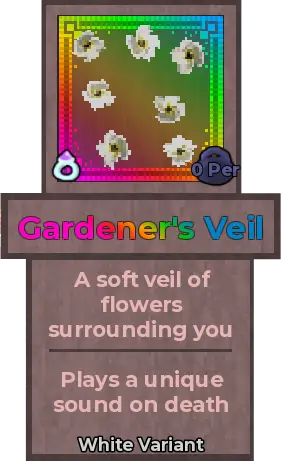
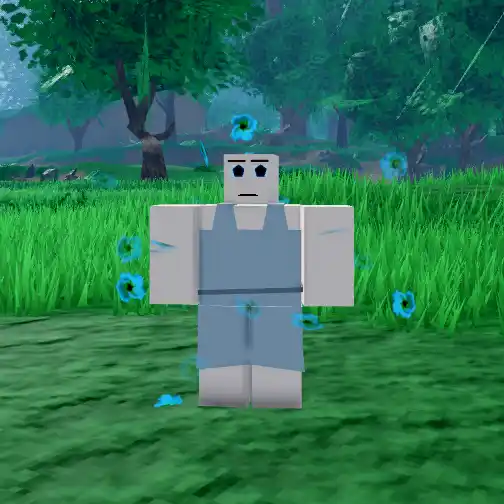

Gardener's Veil

Info
Slot: Accessory
Recolorable?: Yes
Unique Colors: None
Particle Effects: None
Sound Effects: Yes
Owner: Syahnce
Appearance & Effects
In-game description: A soft veil of flowers surrounding you - Plays a unique sound on death
The Gardener's Veil is a cloud of flower particles that float around the player and rotate. The flowers have four petals each, and the centers are darker than the petals. The Gardener's Veil does not have any unique colors, but can be recolored. Gardener's Veil is unique in its sound effect that plays on death, unlike other relic sound effects, which are passive. When the player dies, a faint chime is played.
Inspiration
The Gardener's Veil belongs to Syahnce. It was inspired by a flower garden owned by the character Basil from the game OMORI. The sound effect that the Gardener's Veil plays on death sounds similar to Basil's background music.
The Gardener's Veil in it's default color, white
Viewed from the back
Image Gallery
Colored red

Colored blue
Colored pink
Basil from OMORI, seen wearing a crown of flowers